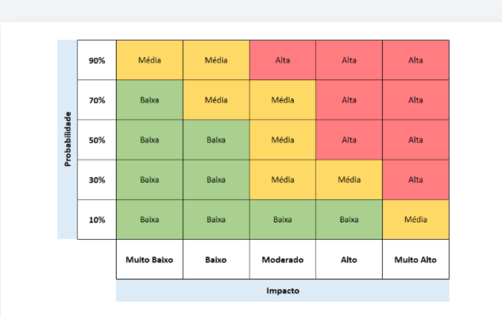

Tema central: Tecnologia para conectar pessoas a oportunidades de trabalho | Fase: Pré-implementação
| Equipe: | [ Ex.: E1, E2, E3, E4 ou E5 ] | Data: | [ DD/MM/AAAA ] |
| Nome do Projeto: | [ Nome do software que está sendo projetado pela equipe ] | ||
| Tema: | Tecnologia para conectar pessoas a oportunidades de trabalho | ||
| Integrantes: |
1. _________________________________________________________________ (Papel: _______________) 2. _________________________________________________________________ (Papel: _______________) 3. _________________________________________________________________ (Papel: _______________) 4. _________________________________________________________________ (Papel: _______________) 5. _________________________________________________________________ (Papel: _______________) |
||
Considere que os alunos estão desenvolvendo um projeto acadêmico de software de baixa ou média complexidade, com prazo aproximado de um mês para desenvolvimento.
Atualmente, as equipes possuem apenas o protótipo, os requisitos e os demais artefatos de planejamento produzidos nas etapas anteriores. Nenhuma funcionalidade foi implementada até o momento.
A atividade deverá ser realizada antes do início da implementação do Front-end, Back-end, integração e testes.
O objetivo é permitir que os estudantes antecipem possíveis problemas durante o desenvolvimento, avaliem suas consequências e estabeleçam estratégias preventivas.
Como o software ainda não foi implementado, a atividade deverá priorizar exclusivamente a identificação de riscos futuros.
Cada equipe deverá analisar seu protótipo e planejamento, identificando o que poderá dar errado durante a futura implementação, considerando as seguintes áreas técnicas:
Analisar possíveis dificuldades relacionadas a: implementação das telas do protótipo; escolha e utilização de frameworks; responsividade; componentes de interface; formulários e validações; navegação entre telas; usabilidade; compatibilidade com diferentes dispositivos.
Analisar possíveis dificuldades relacionadas a: implementação das regras de negócio; desenvolvimento de APIs; autenticação e autorização; modelagem e conexão com o banco de dados; armazenamento e recuperação de informações; segurança; conhecimento das linguagens e frameworks escolhidos.
Analisar possíveis dificuldades relacionadas a: comunicação entre Front-end e Back-end; integração com APIs; integração com o banco de dados; dependência de serviços externos; compatibilidade entre tecnologias; envio e recebimento de informações.
Analisar possíveis dificuldades relacionadas a: conhecimento sobre técnicas de testes; elaboração de casos de teste; validação dos requisitos; verificação das regras de negócio; identificação de possíveis falhas; disponibilidade de tempo para realizar testes; validação das funcionalidades essenciais antes da entrega.
Analisar possíveis dificuldades relacionadas a: prazo de desenvolvimento; disponibilidade dos integrantes; distribuição das responsabilidades; conhecimento técnico da equipe; dependência entre tarefas; comunicação entre integrantes; mudanças nos requisitos; complexidade do escopo.
Como o software ainda não foi implementado, a probabilidade deverá ser estimada qualitativamente, considerando as informações disponíveis no momento do planejamento.
A equipe deverá responder à seguinte pergunta central:
| Probabilidade | Classificação | Critério de mensuração antes da implementação |
|---|---|---|
| 10% | Muito baixa | A equipe possui conhecimento e recursos adequados, e não identifica fatores relevantes que favoreçam a ocorrência do risco. |
| 30% | Baixa | Existem pequenas dificuldades ou incertezas previstas, mas a equipe possui condições adequadas para lidar com elas. |
| 50% | Moderada | Existem incertezas relevantes sobre a implementação, o conhecimento técnico, as dependências ou os recursos disponíveis. |
| 70% | Alta | Existem limitações significativas, como pouca experiência técnica, funcionalidades complexas, dependências importantes ou restrições de prazo. |
| 90% | Muito alta | Existem fortes indícios de que o risco poderá acontecer, considerando as limitações conhecidas e a ausência de alternativas ou medidas preventivas adequadas. |
As respostas auxiliam na escolha da classificação mais adequada. Não transforme essas perguntas em uma fórmula matemática obrigatória. Os percentuais de 10%, 30%, 50%, 70% e 90% são referências didáticas para padronizar as estimativas qualitativas, e não probabilidades comprovadas estatisticamente. A equipe deverá justificar cada classificação utilizando as informações disponíveis antes da implementação.
O impacto deverá ser estimado considerando as consequências que poderão ocorrer caso determinado risco se concretize durante o desenvolvimento.
A equipe deverá responder à seguinte pergunta central:
| Impacto | Critério de mensuração antes da implementação |
|---|---|
| Muito baixo | Poderá exigir pequenos ajustes, sem comprometer funcionalidades importantes ou o planejamento geral. |
| Baixo | Poderá comprometer aspectos ou funcionalidades secundárias, sem prejudicar os objetivos principais do software. |
| Moderado | Poderá comprometer uma funcionalidade importante, gerar retrabalho ou exigir mudanças no planejamento. |
| Alto | Poderá comprometer funcionalidades essenciais, afetar outras etapas do desenvolvimento ou ameaçar o prazo de entrega. |
| Muito alto | Poderá inviabilizar o desenvolvimento, impedir a entrega de um software funcional ou comprometer o objetivo principal do projeto. |
Não estabeleça quantidades obrigatórias de horas ou dias de retrabalho, pois os alunos ainda não implementaram o software. O impacto deverá ser avaliado com base no comprometimento previsto do projeto. Caso existam consequências com diferentes níveis de impacto, considere o maior impacto aplicável, desde que devidamente justificado.
Utilize a matriz de riscos 5 x 5 oficial como referência visual obrigatória, preservando exatamente sua distribuição de cores e classificações:
| Impacto | ||||||
|---|---|---|---|---|---|---|
| Muito baixo | Baixo | Moderado | Alto | Muito alto | ||
| Probabilidade | 90% | Médio | Médio | Alto | Alto | Alto |
| 70% | Baixo | Médio | Médio | Alto | Alto | |
| 50% | Baixo | Baixo | Médio | Alto | Alto | |
| 30% | Baixo | Baixo | Médio | Médio | Alto | |
| 10% | Baixo | Baixo | Baixo | Baixo | Médio | |
Cores oficiais adotadas:

Insira os códigos dos riscos identificados (R01, R02, R03...) no espaço correspondente dentro de cada célula. É permitido inserir mais de um risco na mesma célula:
| Impacto | ||||||
|---|---|---|---|---|---|---|
| Muito baixo | Baixo | Moderado | Alto | Muito alto | ||
| Probabilidade | 90% | MÉDIO [ ] |
MÉDIO [ ] |
ALTO [ ] |
ALTO [ ] |
ALTO [ ] |
| 70% | BAIXO [ ] |
MÉDIO [ ] |
MÉDIO [ ] |
ALTO [ ] |
ALTO [ ] |
|
| 50% | BAIXO [ ] |
BAIXO [ ] |
MÉDIO [ ] |
ALTO [ ] |
ALTO [ ] |
|
| 30% | BAIXO [ ] |
BAIXO [ ] |
MÉDIO [ ] |
MÉDIO [ ] |
ALTO [ ] |
|
| 10% | BAIXO [ ] |
BAIXO [ ] |
BAIXO [ ] |
BAIXO [ ] |
MÉDIO [ ] |
|
A matriz possui três elementos distintos:
Regra fundamental: O nível de risco não deverá ser escolhido diretamente pelos alunos. Primeiramente, a equipe deverá estimar a probabilidade. Em seguida, deverá avaliar o impacto. Por último, deverá cruzar essas duas informações na matriz para obter o nível de risco correspondente.
Cada célula representa uma combinação previamente estabelecida de severidade técnica:
A distribuição das cores não precisa ser igual em todas as linhas. Não existe uma distribuição universal obrigatória na literatura; a matriz adotada define os parâmetros formais para esta disciplina.
Os exemplos hipotéticos a seguir auxiliam no entendimento do processo:
| Área | Risco previsto | Probabilidade | Impacto | Nível |
|---|---|---|---|---|
| Front-end | Dificuldade na implementação das telas do protótipo | 50% | Moderado | Médio |
| Front-end | Dificuldade na implementação da responsividade | 70% | Baixo | Médio |
| Back-end | Dificuldade na implementação da autenticação | 70% | Alto | Alto |
| Back-end | Problemas na conexão com o banco de dados | 50% | Muito alto | Alto |
| Integração | Dificuldade na comunicação entre Front-end e Back-end | 70% | Muito alto | Alto |
| Testes | Tempo insuficiente para testar as funcionalidades essenciais | 70% | Alto | Alto |
| Testes | Dificuldade em identificar falhas antes da entrega | 50% | Alto | Alto |
| Gerenciamento | Indisponibilidade de um integrante da equipe | 30% | Moderado | Médio |
| Gerenciamento | Atraso na implementação das funcionalidades essenciais | 70% | Alto | Alto |
(Essas classificações são didáticas e hipotéticas. Cada equipe deverá realizar sua própria avaliação conforme as particularidades do seu projeto).
Identificação: R01
Área: Back-end
Risco: Dificuldade na implementação da autenticação de usuários
Causa: Pouca experiência da equipe com mecanismos de autenticação
Consequência prevista: Impossibilidade de acessar funcionalidades essenciais previstas no protótipo
Probabilidade: 70% (Alta)
Justificativa da probabilidade: A equipe possui pouca experiência com autenticação e precisará aprender a utilizar os mecanismos necessários durante o desenvolvimento.
Impacto: Alto
Justificativa do impacto: Outras funcionalidades essenciais dependem da autenticação, e uma dificuldade nessa implementação poderá comprometer o funcionamento e o prazo de entrega do software.
Nível de risco: Alto, conforme o cruzamento na matriz 5 x 5 (Linha 70% x Coluna Alto).
Estratégia de tratamento: Mitigar
Ação preventiva planejada: Estudar previamente os mecanismos de autenticação, selecionar uma biblioteca documentada e priorizar essa funcionalidade no início do planejamento.
Responsável: Integrante responsável pelo Back-end
Observe que toda essa análise pode ser realizada com base no protótipo e no planejamento, antes que qualquer linha de código tenha sido escrita.
Solicite que cada equipe identifique, no mínimo, cinco riscos (R01 a R05) relacionados ao seu próprio projeto de software, contemplando as diferentes áreas quando aplicáveis. Adicione novas linhas se necessário.
| ID | Área | Risco identificado | Causa | Consequência prevista |
|---|---|---|---|---|
| R01 | ||||
| R02 | ||||
| R03 | ||||
| R04 | ||||
| R05 |
Preencha a tabela editável de avaliação. Os estudantes deverão justificar suas escolhas considerando o protótipo, os requisitos, o planejamento, as tecnologias escolhidas e as condições atuais da equipe. Não serão aceitas classificações sem justificativas fundamentadas.
| ID | Probabilidade | Justificativa da probabilidade | Impacto | Justificativa do impacto | Nível de risco |
|---|---|---|---|---|---|
| R01 | |||||
| R02 | |||||
| R03 | |||||
| R04 | |||||
| R05 |
Procedimento passo a passo para o preenchimento da matriz 5 x 5:
Apresente as quatro estratégias formais de tratamento:
| Estratégia | Significado | Exemplo de ação planejada |
|---|---|---|
| Evitar | Alterar o planejamento para eliminar a exposição ao risco. | Substituir uma tecnologia desnecessariamente complexa por outra mais simples. |
| Mitigar | Reduzir a probabilidade ou o impacto do risco. | Estudar previamente um framework desconhecido antes de utilizá-lo. |
| Transferir | Atribuir parte das consequências ou responsabilidades a terceiros. | Utilizar um serviço especializado externo que assuma determinadas responsabilidades técnicas. |
| Aceitar | Reconhecer o risco e planejar seu acompanhamento. | Manter uma funcionalidade secundária como opcional, caso ocorram atrasos. |
Nesta atividade, os alunos deverão apenas planejar as ações de tratamento. Não será necessário executar as ações ou comprovar sua eficácia nesta etapa.
| ID | Nível de risco | Estratégia escolhida | Ação planejada | Responsável |
|---|---|---|---|---|
| R01 | ||||
| R02 | ||||
| R03 | ||||
| R04 | ||||
| R05 |
Cada equipe deverá entregar este documento contendo:
Para garantir que o documento seja plenamente compatível com o Google Docs e possa ser utilizado por estudantes com contas pessoais ou institucionais distintas:
/copy (exemplo: https://docs.google.com/document/d/ID_DO_ARQUIVO/copy). Dessa forma, ao abrir o link, o Google Docs solicita automaticamente a criação de uma cópia para a conta Google do aluno./copy com visualização pública é a prática padrão garantida do Google Docs.Antes de entregar o documento, a equipe deve verificar se: